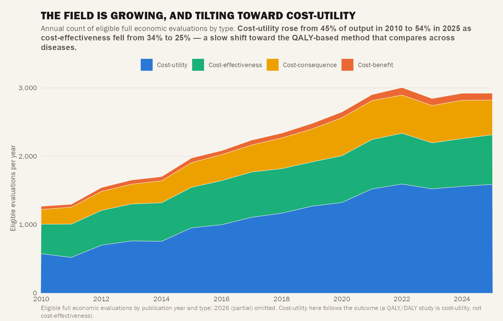

Timelines (T1–T5)
Timeline Set (T1–T5)
Comparative time-series on the year dimension (2010–2025; 2026 partial, dropped). Each standalone, companion finish.
Discipline notes: Income-comparative ones (T1, T2) use single-country extracted geography with known income. T3 uses
country_universedenominators per income group. T5 is abstract-only proxy (screening corpus, 100%), “not reported ≠ not done”.

T1 — Equity Over Time
LMIC share of annual single-country output vs their burden share (2010–2025).
Rose 16% → 36% (2010→2025) — real progress, yet still far below 83% LMIC burden share (dashed line). Shaded band = distance to reference.

T2 — QALY-Metric Convergence by Income
QALY use by income group over time. The metric gap over time.
LMIC 15% → 49% vs HIC 51% → 59% (2010→2025). Gap narrowed ~10pp but persists — LMIC catching up on comparable metric adoption.

T3 — Reach Over Time
Cumulative % of each income group’s countries with ≥1 evaluation. Country universe denominators per income group.
HIC covered early; LIC reached last (28% → 96%). Geographic reach expanding but uneven — LIC coverage only recently approaching saturation.

T4 — Method Streamgraph
Econ-eval-type composition over time (2010–2025). Stacked streamgraph.
Cost-utility 45% → 54%, cost-effectiveness 34% → 25%. Field increasingly adopts CUA (QALY) methods; CEA declining. Mirrors C11/T2 metric shift.

T5 — Decision-Usefulness Over Time
Share of abstracts foregrounding each decision-analytic element by year. Abstract-only proxy (screening corpus, 100%).
All four rose: threshold most (12%→29%), ICER (25%→48%), PSA (15%→38%), perspective (18%→42%). Reporting improving but majority still foregrounds none.
Timeline Summary
| Figure | Trend | Key Finding |
|---|---|---|
| T1 | ↗ Rising | LMIC share 16→36% vs 83% burden — progress but large gap |
| T2 | ↗ Converging | QALY gap narrowed ~10pp (15→49% vs 51→59%) |
| T3 | ↗ Saturating | LIC country reach 28→96% (last to saturate) |
| T4 | ↗ Shifting | CUA 45→54%, CEA 34→25% — method shift to CUA |
| T5 | ↗ Improving | All 4 decision elements rising; threshold most (12→29%) |
Previous: ← Funder Decision Pack • Next: Map Atlas →